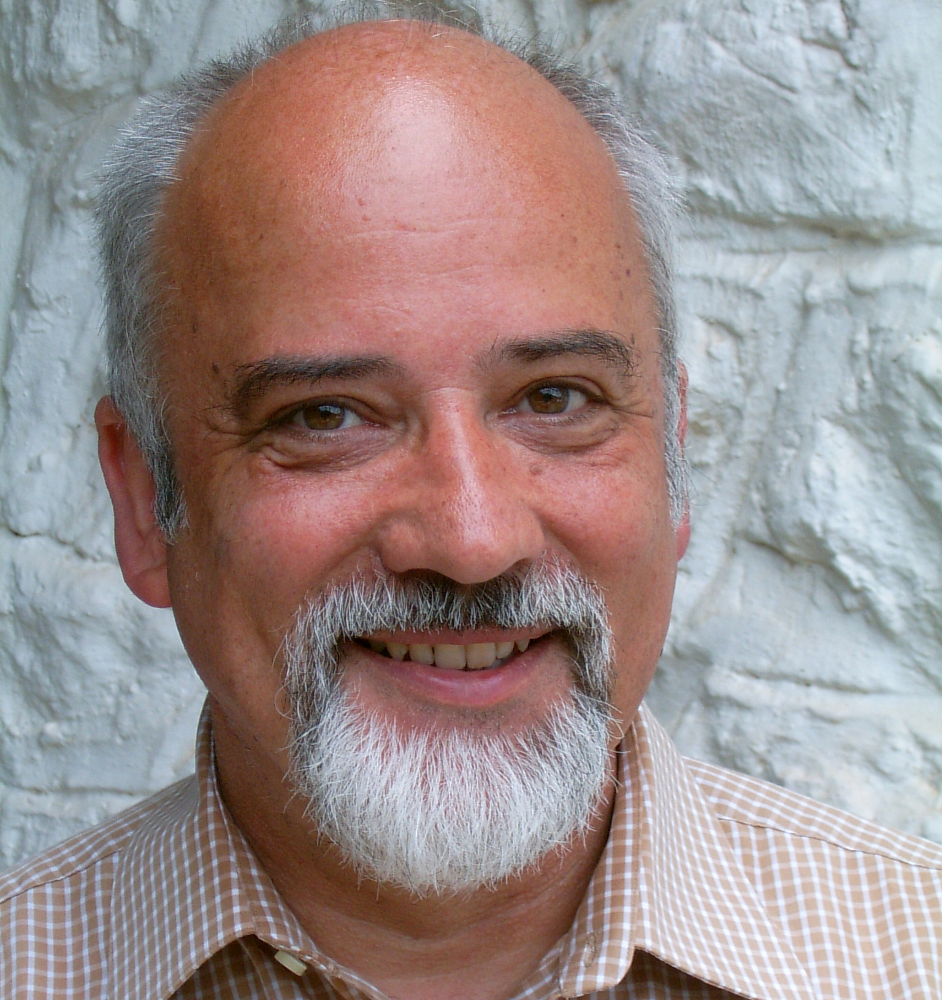

Center members / Gessmann
Center members
Prof. Prof. h.c. Dr. Hans-Werner Gessmann
Director of the Center

Hans-Werner Gessmann works as a cooperating professor at the Krasnoyarsk State Medical University – Prof. V. F. Voyno-Yasenetzky. Doctor of Clinical Psychology. Director of the International Center for Clinical Psychology and Psychotherapy (ICCPP).
Founder of the Psychotherapeutic Institute Bergerhausen, Germany.
He was born in Duisburg (North Rhine Westphalia – Germany) in 1950.
See also the Wikipedia orientation and the internships page, where he is listed as agency supervisor.
Curriculum
Training, posts, and appointments
- Biology for the teaching post at the Ruhr University of Education from 1969 to 1970
- German for the teaching post at the Mercator University in Duisburg from 1970 to 1971
- Studied psychology at California Christian University from 1971 to 1976
- Doctorate in Philosophy in the Department of Clinical Psychology with the work “A Comparative Study of Heredity, Environment and Behavior Symptoms of Selected Dyslexic Children and Non-Dyslexic Children” 1976
- Studied pedagogy at the University of Duisburg from 1976 to 1977
- Psychotherapy training at the Institute for Psychodrama Dr. Ella Mae Shearon in Cologne from 1973 to 1979
- Psychotherapy training at Moreno Institute Stuttgart and Überlingen 1976
- Training in psychotherapy Psychological observation and training center of the University of Education Westphalia-Lippe in Münster 1977
- Psychotherapy training at the Illinois Center for Psychodrama and Sociometry in Chicago from 1976 to 1977
- Training program for sex therapists at the Payne Whitney Clinic part of the New York Hospital-Cornell Medical Center withDr. Helen Singer-Kaplan
- Graduated as a psychodrama assistant in Cologne in 1978
- Graduated as a psychodrama therapist in Cologne in 1979
- State medical license to practice psychotherapy in 1995
- Since 1980 development and foundation of humanistic psychodrama
- Head of the Psychotherapeutic Institute Bergerhausen Kerpen / Duisburg since June 1976, here from 1976 to 1989 as head of the state-recognised institution of public education
- Head of psychotherapy training in the social psychiatric clinics Sonnenberg, (Prof. Dr. med. Schmidt), Saarbrücken from September 1976 to July 1977
- Planning and implementation of the research project “Unspecific factors in dyslexia therapy” (Prof. Dr. Raatz) from December 1976 to December 1977 at the University of Duisburg-Essen
- Head of seminars for group psychotherapy at the Moreno Institute in Überlingen (Dr. med. G. Leutz) and Stuttgart (Prof. Dipl.-Psych. H. Straub) from 1975 to 1978
- Lecturer at the Berlin University of the Arts, Department of Education and Social Sciences, 1984
- Head of block seminar work on methods of humanistic psychology for several years in Ramsau am Dachstein (Austria) and in Porto Heli (Peloponnese, Greece)
- Several years of consultancy work for Mummert + Partner (e.g. at the companies Audi and Henkel) in work and organisational psychology
- Managing director of the “Landhaus Streithof” psychiatric hospital in Mülheim an der Ruhr (specialist clinic for addiction disorders) 1998-1999
- Director of the Psychotherapeutic Institute Bergerhausen from 1976 to 2018, founder of the sleep medicine center in the PIB
- Managing Director of the European Center of Intercultural Communication in Tyros – Greece
- Editor of the International Journal of Humanistic Psychodrama
- Employees in seminars, congresses and conferences in Athens, Basel, Berlin, Bern, Chicago, Deland (Florida), Düsseldorf, Frankfurt, Jerusalem, Cologne, London, Montelimar (southern France), New York
- Member of numerous national and international professional associations and professional societies
- Honorary President of the European Societies for Humanistic Psychodrama and Pedagogy since 2006
- Author of 56 books on more than 150 scientific articles
- In 2007 visiting professor at the IGUMO Moscow University in the Faculty of Psychology, at the Yaroslavl State University
- January 2008 guest lecturer at the Georg August University of Göttingen
- since 2009 visiting professor at the Academy of Social Administration in Moscow
- since April 2010 professor at the Faculty of General and Developmental Psychology
- since September 2009 professor at the Faculty of Social Psychology at the State University Kostroma – Main focus: Systemic family therapy and clinical psychology / psychotherapy
- Professor of family psychotherapy at the Forensic Psychology Faculty of the Moscow City Pedagogical-Psychological University from February 2012
- Co-editor of the all-Russian science magazine “The Legal Initiative” since October 2012
- From 2013 professor of clinical psychology at the Faculty of Pedagogical Education of the Pedagogical-Psychological Institute of the Nekrasov University Kostroma
- Visiting Professor of Humanistic Psychodrama at Smolensk State University 09/2013
- Member of the Editorial Board of the Scientific Web Journal “Medical Psychology in Russia” from May 2014
- Appointed international assessor at AKKORK in December 2014
- Professor honoris causa at the International P.A. Solypin Institute for Information and Public Administration – December 23, 2014
- Professor honoris causa at Moscow State Psychological-PedagogicalUniversity – March 21, 2016
- Introduction of group psychotherapy in Azerbaijan September 2017, congress in Baku with 141 psychotherapists
- 2019 member of the International Organizing Committee of the VI. International Scientific and practical Conference at the Staatl. Krasnoyarsk Medical University Prof. V.F. Volno-Yasenetzky
- 2020 Chennai Chancellor appointed expert council at VIT University
- 2020 Longterm visiting Professor of Clinical Psychology and Psychotherapy at Krasnoyarsk State Medical University – Prof. V. F. Voyno-Yasenetzky
Bibliography
Publications / educational films
Numbered list as published on the ICCPP member page, including books, articles, and teaching films.
- [1] Rauschmittel, Arbeitsmaterialien für die Hauptschule. A. Henn Verlag, Ratingen – Wuppertal – Kastelaun, 1971
- [2] Fragebogen zur Differentialdiagnose der Legasthenie. Pädagogisch-Psychologisches Institut, Duisburg, 1974
- [3] Übungsaufgaben zum psychologischen Test für das Medizinstudium – Ü-PTM- Serie 1 bis 14, Jungjohann Verlag, Neckarsulm, 1980
- [4] Figuren zusammensetzen, Ü-PTM 1. Jungjohann Verlag, Neckarsulm, 1980
- [5] Räumliches Vorstellungsvermögen, Ü-PTM 5. Jungjohann Verlag, Heidelberg, 1981
- [6] Figuren lernen, Ü-PTM 8. Jungjohann Verlag, Neckarsulm 1981
- [7] Muster zuordnen, Ü-PTM 11. Jungjohann Verlag, Neckarsulm, 1981
- [8] Schattenrisse, Ü-PTM 13. Jungjohann Verlag, Neckarsulm, 1981,
- [9] Gedächtnistraining I, Fakten lernen, Ü-PTM 9. Jungjohann Verlagsgesellschaft, Neckarsulm, 1981, 2. Auflage 1985
- [10] Mathematisches Grundverständnis, Ü-PTM 6. Jungjohann Verlag, Heidelberg, 1982
- [11] Sprachgefühl – Satzergänzung, Ü-PTM 3. Jungjohann Verlag, Neckarsulm, 1983
- [12] Textverständnis, Ü-PTM 10. Jungjohann Verlag, Neckarsulm, 1983
- [13] Soziale Intelligenz, Ü-PTM 12. Jungjohann Verlag, Neckarsulm, 1983
- [14] Beurteilung formalisierter Informationen, Ü-PTM 4. Jungjohann Verlag, Neckarsulm 1984
- [15] Übungslehrbuch zum psychologischen Test für das Studium der Medizin, Zahnmedizin und Tiermedizin, Ü-PTM 14. Jungjohann Verlag, Neckarsulm, 1981, 2. Auflage 1984
- [16] Bausteine zur Gruppenpsychotherapie (Hrsg.), Band 1. Jungjohann Verlag, Neckarsulm, 1984
- [17] Über die Wirksamkeit psychodramatischer Wochenend-Seminare auf die im Freiburger Persönlichkeitsinventar erfassten Merkmale und auf das Aggressionsverhalten gemessen mit dem Rosenzweig Picture Frustration Test. In: Bausteine zur Gruppenpsychotherapie, Jungjohann Verlag, Neckarsulm, 1984, S. 85 – 94
- [18] Bearbeitung einer depressiven Stimmungslage – kommentiertes Protokoll der Sitzung -. In: Bausteine zur Gruppenpsychotherapie, Jungjohann Verlag, Neckarsulm, 1984, S. 36 – 77
- [19] Konzentriertes und sorgfältiges Arbeiten, Ü-PTM 7. Jungjohann Verlag, Heidelberg, 1981, 2. Auflage 1985
- [20] Medizinisch-naturwissenschaftliches Grundverständnis, Ü-PTM 2. Jungjohann Verlag, Neckarsulm, 1985, 2. Auflage 1986
- [21] Antistress für Fahrschüler – Audio-Trainingsprogramm zur Verbesserung der Konzentrations- und Reaktionsfähigkeit, Verlag des PIB, Duisburg, 1986
- [22] Bausteine zur Gruppenpsychotherapie (Hrsg.), Band 2. Jungjohann Verlag, Neckarsulm, 1987
- [23] “Wenn die Arbeit auf den Magen drückt …” – Bearbeitung einer Leistungsstörung durch psychodramatische Gruppenpsychotherapie. In: Bausteine zur Gruppenpsychotherapie, Band 2, Jungjohann Verlag, Neckarsulm, 1987, S. 171 – 215
- [24] Bausteine zur Gruppenpsychotherapie (Hrsg.), Band 3. Jungjohann Verlag, Neckarsulm, 1990
- [25] Megalomania normalis oder der Versuch einer Biographie J. L. Morenos. In: Bausteine zur Gruppenpsychotherapie, Band 3, Jungjohann Verlag, Neckarsulm, 1990, S. 23 – 57
- [26] Das Konzept des “Sozialen Atoms” in der Familientherapie. In: Bausteine zur Gruppenpsychotherapie, Band 3, Jungjohann Verlag, Neckarsulm, 1990, S. 105 – 135
- [27] ÜTMS 90 – Übungstest für Medizinische Studiengänge im Orginalformat. Jungjohann Verlagsgesellschaft, Neckarsulm – Stuttgart, 1990
- [28] ÜTMS 91 – Übungstest für Medizinische Studiengänge im Originalformat – 1. Testrevision – . Jungjohann Verlagsgesellschaft, Neckarsulm – Stuttgart, 1991
- [29] ÜTMS 92/93 – Übungstest für Medizinische Studiengänge im Originalformat – 2. Testrevision – . Jungjohann Verlagsgesellschaft, Neckarsulm – Stuttgart, 1992
- [30] ÜTMS-L – Übungslehrbuch zur intensiven Vorbereitung auf den Test für medizinische Studiengänge. Jungjohann Verlagsgesellschaft, Neckarsulm – Stuttgart, 1993
- [31] ÜTMS 95/96 – Übungstest für Medizinische Studiengänge im Originalformat – 3. Testrevision – . Jungjohann Verlagsgesellschaft, Neckarsulm – Stuttgart, 1995
- [32] Das Humanistische Psychodrama. Internationale Zeitschrift für Humanistisches Psychodrama, Juni 1995, 1. Jahrgang Heft 1
- [33] Empirische Untersuchung der therapeutischen Wirksamkeit der Doppelmethode im Humanistischen Psychodrama. Internationale Zeitschrift für Humanistisches Psychodrama, Dez. 1995, 1. Jahrgang Heft 2
- [34] Aspekte von Erlebens- und Handlungswiderständen in der psychodramatischen Praxis und Möglichkeiten der Überwindung. Internationale Zeitschrift für Humanistisches Psychodrama, Dez. 1995, 1. Jahrgang Heft 2
- [35] Die Lebenssichtlinie. Internationale Zeitschrift für Humanistisches Psychodrama, Juli 1996, 2. Jahrgang Heft 3
- [36] Humanistisches Psychodrama Band 4, (Hrsg.), Verlag des PIB, Duisburg, 1996
- [37] Empirische Untersuchung der therapeutischen Wirksamkeit der Doppelmethode im Humanistischen Psychodrama. In: Humanistisches Psychodrama Band 4, (Hrsg.), Verlag des PIB, Duisburg, 1996
- [38] Lebenssichtlinie, eine neue Methode im Humanistischen Psychodrama. In: Humanistisches Psychodrama Band 4, (Hrsg.), Verlag des PIB, Duisburg, 1996
- [39] Humanistische Psychologie und Humanistisches Psychodrama. In: Humanistisches Psychodrama Band 4, (Hrsg.), Verlag des PIB, Duisburg, 1996
- [40] Morenos Spontaneitätsprinzipien und Spontaneität im Humanistischen Psychodrama. Internationale Zeitschrift für Humanistisches Psychodrama, Dezember 1996, 2. Jahrgang Heft 4
- [41] Bibliographie deutschsprachiger Psychodramaliteratur, 3. überarbeitete Auflage 1997. Skripten zum Humanistischen Psychodrama, Verlag des Psychotherapeutischen Instituts Bergerhausen, Duisburg, 1997
- [42] Psychodrama. In: Grubitzsch, S.; Weber, K.: Psychologische Grundbegriffe – ein Handbuch. rororo sachbuch 55 5883, Reinbek, 1998
- [43] Der Fortbildungsgang ”Humanistisches Psychodrama” – Richtlinien für die Fortbildung. Internationale Zeitschrift für Humanistisches Psychodrama, Juni 1997, 3. Jahrgang Heft 5
- [44] Das Szenen-Erstinterview im Humanistischen Psychodrama. Internationale Zeitschrift für Humanistisches Psychodrama, Dezember 1997, 3. Jahrgang Heft 2
- [45] Gessmann/Meyer: Die Bedeutung der Körpersprache beim Doppelprozess im Humanistischen Psychodrama – eine empirische Studie. Internationale Zeitschrift für Humanistisches Psychodrama, Dezember 1997, 3. Jahrgang Heft 2
- [46] Bibliographie internationaler Psychodramaliteratur zum Themenbereich Sucht. Skripten zum Humanistischen Psychodrama. Verlag des Psychotherapeutischen Instituts Bergerhausen, Duisburg, 1998
- [47] Das ”Sharing” im Klassischen und im Humanistischen Psychodrama. Internationale Zeitschrift für Humanistisches Psychodrama, Juni 1998, 4. Jahrgang Heft 1
- [48] A Comparative Study of Heredity, Environment und Behaviour Symptoms of Selected Dyslexic Children and Non-Dyslexic Children. Verlag des Psychotherapeutischen Instituts Bergerhausen, Duisburg, 1998
- [49] Katharsis – das Wirkungsgeschehen für psychische Veränderung im Psychodrama? Internationale Zeitschrift für Humanistisches Psychodrama, Dezember 1998, 4. Jahrgang Heft 2
- [50] Training der suprahyoidalen Muskulatur bei fünf Patienten mit obstruktiver Schlafapnoe. Verlag des Psychotherapeutischen Instituts Bergerhausen, Duisburg, 1998
- [51] Kommentar zur Theoriedarstellung “Psychodrama, Soziometrie und Gruppenpsychotherapie” in der Weiterbildungsordnung 1999 des Moreno Instituts in Überlingen. Internationale Zeitschrift für Humanistisches Psychodrama, Dezember 1998, 4. Jahrgang Heft 2
- [52] Geschichte und Entwicklung der Gruppenpsychotherapie und des Psychodramas. Internationale Zeitschrift für Humanistisches Psychodrama, Juni 1999, 5. Jahrgang Heft 1
- [53] Soziometrie – einschließlich ihrer Bedeutung für das Humanistische Psychodrama. Verlag des Psychotherapeutischen Instituts Bergerhausen, Duisburg, 2000
- [54] Rekrutierung der suprahyoidalen Muskulatur durch externe Elektrostimulation zur Prävention und Behandlung des Schlafapnoe-Syndroms. Verlag des Psychotherapeutischen Instituts Bergerhausen, Duisburg, 2000
- [55] Silke Bogner-Wolff, H.-W. Gessmann (Herausgeber): Psychodrama – Jeder Mensch ein Künstler – mögliche Begegnung Moreno – Beuys. Verlag des Psychotherapeutischen Instituts Bergerhausen, Duisburg, 2001
- [56] Über die Wirksamkeit des Zungenmuskel-Trainings (ZMT) bei nCPAP-Patienten mit obstruktivem Schlafapnoe-Syndrom. Verlag des Psychotherapeutischen Instituts Bergerhausen, Duisburg, 2001
- [57] Das Zungenmuskeltraining. Verlag des Psychotherapeutischen Instituts Bergerhausen, Duisburg, 2004
- [58] Peter Felix Kellermann (Autor), Jonathan D. Moreno (Vorwort), Hans-Werner Gessmann (Herausgeber): Focus Psychodrama. Verlag des Psychotherapeutischen Instituts Bergerhausen, Duisburg, 2005
- [59] Zusammenhänge zwischen dem Body-Mass-Index (BMI) und der Wirksamkeit des Zungenmuskel-Trainings (ZMT®) beim obstruktiven Schlafapnoe-Syndrom (OSAS), Verlag des Psychotherapeutischen Instituts Bergerhausen, Duisburg, 2006
- [60] Elsa M. Frank (Autorin), Wilma Castrian (Vorwort), H.-W. Gessmann (Herausgeber): Wege zur Menschenkenntnis – Wissenschaft nach Carl Huter, Verlag des Psychotherapeutischen Instituts Bergerhausen, Duisburg, 2006
- [61] Введение в гуманистическую психодраму: зффективиюй метод развития культуры диалога. Диалог культур – культура диалога: материалы международной науч.-практич. конф.- Кострома, 1-7 сентября 2008 г. отв. ред. Л. Н. Ваулина. Кострома: КГУ им. Н. А. Некрасова 2008. – 282 с. ISBN 978-5-7591-0916-7
- [62] Humanistic Psychodrama. International Journal of Humanistic Psychodrama. Hans-Werner Gessmann (Editor). Publishing Company of the Psychotherapeutic Institute Bergerhausen, Duisburg – Germany, 2007
- [63] Treatment of a Depressive Mood – Protocol and Commentary of a Group Psychotherapy Session. International Journal of Humanistic Psychodrama. Hans-Werner Gessmann (Editor). Publishing Company of the Psychotherapeutic Institute Bergerhausen, Duisburg – Germany, 2007
- [64] Humānistiskā psihodrāma. Starptautiskais humānistiskâs psihodrāmas žurnāls. Hans-Verners Gesmans (Izdevējs), Bergerhauzenas Psihoterpijas Instituta izdevniecība Duisburg, 2008
- [65] Depresīva stāvokïa apstrāde. Grupu psihoterapijas semināra protokols un komentārs. Starptautiskais humānistiskâs psihodrāmas žurnāls. Hans-Verners Gesmans (Izdevējs), Bergerhauzenas Psihoterpijas Instituta izdevniecība Duisburg, 2008
- [66] Шеринг в гуманистической психодраме. Психолого-педагогические аспекты межкулътурной коммуникации в обраэовании: Сборник Науч. Статей / Сост О.Б. Скрябина; нач ред Н.ф. Басов – Кострома: КГУ им. Н.А. Некрасова, 2009 – с. 32-43, ISBN 978-5-7591-1023-3
- [67] Margot van de Plas (Autorin), H.-W. Gessmann (Herausgeber): Rick und Jorn, eine phrenologische, psycho-physiognomische und graphologische Untersuchung bei eineiigen Zwillingen. Verlag des PIB Duisburg, 2009. ISBN 978-3-928524-54-4
- [68] Интегрированная системная психотерапия: вклад в межкультурное взаимопонимание. ВЕСТНИК Костромского государственнго университета им. Н.А. Некрасова. 2009, Том 15, Сериа Пелагогика. Психологя. Социалъная работа. Юбенологияю Социокинетика. № 2. с. 153-162, ISSN 1998-0817
- [69] Краткосрочная проблемно-ориентированная терапия как пример межкулътурного вэаимолействия. Диалог кулътур – култура диалога: материалы международной науч.-практич. Конф. – Кострома, 1-5 сентября 2009 г. / отв. ред. Л.Н. Ваулниа. – Кострома КГУ им. Н.А. Некрасова, 2009, с. 90-92, ISBN 978-5-759-1006-4
- [70] Margot van de Plas – H.-W. Gessmann (Uitg.): Rick en Jorn – een frenologisch, psycho-fysiognomisch en grafologisch onderzoek bij een eeneiige tweeling. Verlag des PIB Duisburg, 2009. ISBN 978-3-928524-56-8
- [71] Teрапия в межкультурном пространстве: ничего не делая получать превосходный результат. Необычные советы для обычной консультационной и терапевтической практики. Диалог культур – культура диалога: материалы международной науч.-практич. конф.- Кострома, 6-10 сентября 2010 г. под ред. Л. Н. Ваулиной. Кострома; Дармштадт; Минск; Могилёв; Познань; Ванадзор: КГУ им. Н. А. Некрасова 2010. – с. 111-114 ISBN 978-5-7591-1135-1
- [72] Значение гипносистемной терапии как краткосрочной интервенции при неадекватном совладающем поведении. Психология совладающего поведения: Материалы II. Междунар. Науч.-практ. Конф. Кострома, 23-25 сент. 2010 г. В 2 т. Т. 1/отв.ред.: Т.Л. Крюкова, М.В. Сапоровская, С.А. Хазова. – Кострома: КГУ им. Н.А. Некрасова, 2010, 192-195 с. ISBN 978-5-7591-1143-3
- [73] Humanistic Psychodrama. International Journal of Humanistic Psychodrama. Hans-Werner Gessmann (Editor). Publishing Company of the Psychotherapeutic Institute Bergerhausen, Duisburg – Germany, 2011
- [74] Lehrbuch der Integrierten System- und Familientherapie. Oladova, Elena (russische Bearbeitung). Verlag des Psychotherapeutischen Instituts Bergerhausen, Duisburg, 2011, ISBN 978-3-928524-67-4
- [75] Blatner, Adam (Autor), H.-W. Gessmann (Herausgeber): Grundlagen des Psychodramas – Geschichte, Theorie und Praxis. Verlag des Psychotherapeutischen Instituts Bergerhausen, Duisburg, 2011
- [76] Lehrbuch der Psychotherapien für Studenten. Oladova, Elena (russische Bearbeitung).Verlag des Psychotherapeutischen Instituts Bergerhausen, Duisburg, 2011
- [77] Kochjunas, T. (Autor); Oladova, Elena (deutsche Bearbeitung); H.-W. Gessmann (Herausgeber): Grundlagen der psychologischen Beratung. Verlag des Psychotherapeutischen Instituts Bergerhausen, Duisburg, 2011
- [78] Handbuch der Hypnosetherapie. Oladova, Elena (russische Bearbeitung).Verlag des Psychotherapeutischen Instituts Bergerhausen, Duisburg, 2011
- [79] Психотерапевтическая интервенция в процессе адаптации и интеграци семей переселенцев.(Авторизованный перевод Темежниковой Ольги Борисовны).Психология и право. Издатель: Московский городской психолого-педагогический университет (МГППУ) Главный редактор: Н.В. Дворянчиков, кандидат психологических наук, доцент Форма распространения: электронное периодическое издание (ЭПИ). Периодичность: 4 раза в год.Доступ к журналу (свободный): psyjournals.ru/psyandlaw/ Второй номер выйдет в июле 2011.
- [80] “Eingehüllt in Traurigkeit” – Behandlung einer Depression durch Gruppenpsychotherapie, 1983
- [81] “Wenn die Arbeit auf den Magen drückt” – Behandlung einer Arbeitsstörung durch Gruppenpsychotherapie, 1986
- [82] “Es ist kein Sekt mehr da” – Behandlung einer Beziehungsstörung durch Gruppenpsychotherapie, 1987
- [83] Methoden des Humanistischen Psychodramas 1: “Interview – Doppel – Hilfs-Ich”, 1988
- [84] Methoden des Humanistischen Psychodramas 2: “Das Soziale Atom – das Beziehungsgeflecht von Menschen”, 1989
- [85] Methoden des Humanistischen Psychodramas 3: “Kreative Erwärmungsphasen für die Gruppenpsychotherapie”, 1990
- [86] Einführung in Psychotherapien: Psychodrama-Gruppenpsychotherapie. Video-Fachfortbildung I, Verlag des PIB, Duisburg, 1991
- [87] Einführung in Psychotherapien: Die Gesprächspsychotherapie. Video-Fachfortbildung II, Verlag des PIB, Duisburg, 1992a
- [88] Einführung in Psychotherapien: Die Bioenergetik – Teil I. Video-Fachfortbildung III, Verlag des PIB, Duisburg, 1992b
- [89] Entspannungsverfahren: Das Bio-Feed-Back. Video-Fachfortbildung III, Verlag des PIB, Duisburg, 1992b
- [90] Methoden des Humanistischen Psychodramas: Der Rollentausch. Video-Fachfortbildung III, Verlag des PIB, Duisburg, 1992b
- [91] Methoden des Humanistischen Psychodramas: Das Doppel. Video-Fachfortbildung IV, Verlag des PIB, Duisburg, 1992c
- [92] Einführung in Psychotherapien: Die Bioenergetik – Teil II. Video-Fachfortbildung V, Verlag des PIB, Duisburg, 1992d
- [93] Methoden des Humanistischen Psychodramas: Das Hilfs-Ich. Video-Fachfortbildung V, Verlag des PIB, Duisburg, 1992d
- [94] Die Legasthenie-Diagnose. Video-Fachfortbildung VI, Verlag des PIB, Duisburg, 1992e
- [95] Methoden des Humanistischen Psychodramas: Das Soziale Atom. Video-Fachfortbildung VI, Verlag des PIB, Duisburg, 1992e
- [96] Kinderpsychodramatherapie. Video-Fachfortbildung VII, Verlag des PIB, Duisburg, 1993
- [97] Schlafmedizin –Teil I: Die Physiologie des Schlafens. Video-Fachfortbildung VIII, Verlag des PIB, Duisburg, 1994
- [98] Methoden des Humanistischen Psychodramas: Das Interview. Video-Fachfortbildung VIII, Verlag des PIB, Duisburg, 1994
- [99] “Willst Du gesund werden?” – eine Einführung in das Bibliodrama”, Verlag des PIB, Duisburg, 1994
- [100] Gessmann/Hossbach: Peter Härtling – Trauer und Trost. Erarbeitung eines literarischen Textes mithilfe szenischer Methoden aus dem Humanistischen Psychodrama, Verlag des PIB, Duisburg, 2006
- [101] Gessmann/Opdensteinen: Rainer Maria Rilke – Der Panther. Theaterprojekt der Kölner Nordpark Förderschule Lernen mit Methoden des Humanistischen Psychodramas, Verlag des PIB, Duisburg, 2008
- [102] Methoden des Humanistischen Psychodramas (digitalisierte Neubearbeitung von 1989) – ausgewählte Methoden aus dem Humanistischen Psychodrama: Szenen-Erstinterview, Doppel, Hilfs-Ich, Rollentausch, Soziales Atom, Stegreif-Szenen, Kreative Erwärmungen. Verlag des PIB, Duisburg, 2008
- [103] Es war kein Sekt mehr da (digitalisierte Neubearbeitung einer dokumentarischen Aufzeichnung aus dem Jahre 1989 von der Behandlung einer Arbeitsstörung mit Hilfe des Humanistischen Psychodramas). Verlag des PIB, 2008
- [104] Gessmann/Romeik: Psalm 23 – Er ist mein Hirte. Humanistisches Psychodrama mit biblischem Text, Verlag des PIB, Duisburg, 2009
- [105] «Шампанское закончилось» Использование игры протагонистов гуманистической психодрамы в работе с нарушениями отношенийб. Издательство ПИБ Дуисбург, 2009
- [106] Gessmann/Passmann: Der Querk im Lummerland. Humanistisches Psychodrama mit Vorschulkindern. Verlag des PIB, Duisburg, 2009
- [107] Gessmann/Vieten: Humanistisches Psychodrama mit älteren und alten Menschen. Marienkloster 2009. Verlag des Psychotherapeutischen Instituts Bergerhausen, Duisburg, 2009
- [108] Kindheit und Jugend in der NS-Zeit – Dokumentation einer Zeitzeugenbefragung am Städtischen Gymnasium Straelen. Verlag des Psychotherapeutischen Instituts Bergerhausen, Duisburg, 2010
- [109] „Heute koch ich, morgen brau ich …“ – Eine „rührende“ Geschichte. Protagonistenzentriertes Humanistisches Psychodrama über einen Traum. Verlag des Psychotherapeutischen Instituts Bergerhausen, Duisburg, 2011
- [110] Methoden der Systemischen Therapie 1: Der Einsatz des Familienbrettes in verschiedenen systemtherapeutischen Schulen. Verlag des Psychotherapeutischen Instituts Bergerhausen, Duisburg, 2011
- [111] Kinderpsychodramatherapie. Dokumentation über den Beginn der Therapieform. Verlag des Psychotherapeutischen Instituts Bergerhausen, Duisburg, 2011
- [112] Empirischer Beitrag zur Prüfung der Wirksamkeit psychodramatischer Gruppenpsychotherapie bei Neurosepatienten (ICD-10: F3, F4). Zeitschrift für Psychodrama und Soziometrie, Sonderheft Empirische Forschung. VS Verlag für Sozialwissenschaften – Sonderheft Empirische Forschung, 2011 www.SpringerLink.com www.vs-journals.de
- [113] Международное сотрудничество – Развитие международных связей Академии социального управления. Интервью с Хансом-Вернером Гессманном. Академический вестник – Научно-практический журнал – № 2 – 2010 978-5-91543-030-2 ГОУ ВПО МО – Академия социального управления 2010
- [114] Acпекты противоречия переживаний и действий в психодраматической практике и возможности их преодолеиия. Диалог культур – культура диалога: материалы Х юбилейной международной науч.-практич. конф.- Кострома, 5-10 сентября 2011 г. / под ред. Л. Н. Ваулиной. Кострома; Дармштадт; Минск; Могилёв; Познань; Ванадзор: КГУ им. Н. А. Некрасова 2011. – с. 91-94 ISBN 978-5-7591-1227-3
- [115] Ich bin bei Dir alle Tage – Biografisches aus der Jugend. In: Abenteuer Leben – Was ich Dir erzählen will. Hrsg.: Stiftung Jugend mit Zukunft, Mülheim a. d. Ruhr, S. 40-45. Klartext Verlag, Essen. 2011 ISBN 978-3-8375-0685-3
- [116] KInderpsychodrama – Fortbildung 1989 / Eröffnungsrunde (5:36 Min.) youtu.be/PfG-4ABsPDA
- [117] Kinderpsychodrama – Fortbildung 1989 / Zeitmaschine (2:28 Min.) youtu.be/gOcFdYhp2Ig
- [118] Kinderpsychodrama – Fortbildung 1989 / Aufbau von Szenen mit Hilfe von Materialien (2:23 Min.) youtu.be/YmUKOdaX9Oo
- [119] Kinderpsychodrama – Fortbildung 1989 / Interview zu Szeneneinrichtung (5:21 Min.) youtu.be/n-LcU93iSjA
- [120] Kinderpsychodrama – Fortbildung 1989 / Interview zur Themenfindung (5:03 Min.) youtu.be/ui7lTuKYtpE
- [121] Kinderpsychodrama – Kindertherapiegruppe 1989 / Erwärmung und Protagonistenspiel (23:22 Min.) youtu.be/yn9mZgaUh0M
- [122] Humanistisches Psychodrama nach H.-W. Gessmann / 1989 / Doppel (5:07 Min.) youtu.be/1xQKj4SoxCE
- [123] Humanistisches Psychodrama nach H.-W. Gessmann / 1989 / Szeneninterview (8:37 Min.) youtu.be/05CqsGMvRNM
- [124] Humanistisches Psychodrama nach Prof. Hans-Werner Gessmann – Bemerkungen über die Katharsis im Klassischen Psychodrama (DEU–RU) (5:53 Min.) youtu.be/OR4Tq8F2wIY
- [125] Humanistisches Psychodrama nach Prof. Hans-Werner Gessmann – Die Bedeutung der Gruppe (RU) (11:49Min.) youtu.be/x4e9hjl-K18
- [126] Humanistisches Psychodrama nach Prof. Hans-Werner Gessmann – Das Protagonistenspiel (RU) (12:23 Min.) youtu.be/DnZ3CZctDuA
- [127] Humanistisches Psychodrama nach Prof. Hans-Werner Gessmann – Die Soziometrische Wahl des Protagonisten (3:28 Min.) youtu.be/qzoJVqLtv1I
- [128] Humanistisches Psychodrama nach Prof. Hans-Werner Gessmann (RU) – Die Soziometrische Wahl des Protagonisten (4:02 Min.) youtu.be/AIGxwByKRWg
- [129] Humanistisches Psychodrama nach Prof. Hans-Werner Gessmann – Das Szenen-Erstinterview (4:50 Min.) youtu.be/x0cO8c-qJ7w
- [130] Humanistisches Psychodrama nach Prof. Hans-Werner Gessmann – Die Bedeutung des Protagnisten (DEU–RU) (5:54 Min.) youtu.be/9ZkyIeL8k88
- [131] Humanistic Psychodrama by Prof. Hans-Werner Gessmann – The sociometric choice (Engl.) (3:28 Min.) youtu.be/-36IqhLO_kY
- [132) Эдипов комплекс в гуманистической психодраме в межкультурном аспекте. Диалог культур – культура диалога: материалы международной науч.-практич. конф.- Кострома, 5-11 сентября 2012 г. под ред. Л. Н. Ваулиной. Кострома; Дармштадт; Минск; Познань; Ванадзор: КГУ им. Н. А. Некрасова 2012. – с. 95-99 ISBN 978-5-7591-1298-3
- (133) Эмпирический вклад в проверку эффективности психодраматической групповой психотерапии для пациентов, страдающих неврозом (МКБ-10: F3, F4). Пер. на рус. яз. Е. Оладовой // Вестник КГУ им. Н. А. Некрасова, 2012, Том 18 – с. 72-86 ISSN 1998-0817, ISSN 2073-1426
- (134) Гуманистическая психология и гуманистическая психодрама. Москва 2012 – jurpsy.ru/lib/books/id/25808.php
- [135] Humanistisches Psychodrama nach Prof. Hans-Werner Gessmann – Katharsis im Klassischen Psychodrama (DEU-RU) (1:25 Min.) youtu.be/OR4Tq8F2wIY
- [136] Im Rollentausch mit Sigmund Freud – Prof. Dr. Hans-Werner Gessmann Teil 01 – A special event for the opening of the international center of clinical psychology and psychotherapy at the paedagogic-psychological institute of the State Nekrasov University in Kostroma Sept. 2011 (DEU-RU) (1:25 Min.) youtu.be/tjCjKP6B6po
- [137] Im Rollentausch mit Sigmund Freud – Prof. Dr. Hans-Werner Gessmann Teil 02 – Was ist ein Traum? (DEU – RU) (5:27 Min.) youtu.be/J7861jtoM8M
- [138] Im Rollentausch mit Sigmund Freud – Prof. Dr. Hans-Werner Gessmann Teil 03 – (DEU-RU) (9:30 Min.) Der Träumer weiß, was sein Traum bedeutet. youtu.be/njPqEysXb1U
- [139] Im Rollentausch mit Sigmund Freud – Prof. Dr. Hans-Werner Gessmann Teil 04 – (DEU-RU) (9:30 Min.) Welche Reize wirken während des Schlafes auf die Seele ein? youtu.be/wm1h3yI3o94
- [140] Im Rollentausch mit Sigmund Freud – Prof. Dr. Hans-Werner Gessmann Teil 05 – (DEU – RU) (9:30 Min.) Der Traum bringt den Reiz nicht einfach wieder, sondern verarbeitet ihn. youtu.be/uWry1bbfAaY
- [141] Im Rollentausch mit Sigmund Freud – Prof. Dr. Hans-Werner Gessmann Teil 06 – (DEU-RU) (9:30 Min.) Voraussetzung und Technik der Deutung – 1. Annahme: Der Traum ist ein psychisches Phänomen – 2. Annahme: Der Träumer weiß, was sein Traum bedeutet youtu.be/yRkj0fThSnY
- [142} Im Rollentausch mit Sigmund Freud – Prof. Dr. Hans-Werner Gessmann Teil 07 – (DEU-RU) (9:30 Min.) Der Traum ist ein psychisches Phänomen. youtu.be/x2i1EjQFAHw
- [143] Im Rollentausch mit Sigmund Freud – Prof. Dr. Hans-Werner Gessmann Teil 08 – (DEU-RU) (9:30 Min.) Der Träumer weiß, was sein Traum bedeutet. youtu.be/njPqEysXb1U
- [144] Autogenes Training. Lehrfilm zur Einführung. (19:50 Min.) youtu.be/lkkNEVsfzno
- [145] Το ανθρώπινο ψυχόδραμα από τον καθηγητή Χανς – Βέρνερ Γκεσσμανν – Η κοινωνιομετρική επιλογή του πρωταγωνιστή – για το κλασσικό και ανθρώπινο Ψυχόδραμα (DEU-GR) (3:17 Min.) youtu.be/qUZHiUcHgpQ
- [146] 汉斯沃勒 博士是著名的国际心理治疗工作者。上世纪80年代他创立了人本心理剧，这是一种团体心理治疗的特殊形式。这种形式将心理剧的理论和实践综合进人本主义心理学中，这一系列影片展示了这种特殊形式的团体心理治疗。影片字幕的中文翻译者是心理学硕士李慧敏。(DEU-CHINESE) (3:17 Min.) youtu.be/AUwTuVi-OVQ
- [147] Psychodrama: “Es ist kein Sekt mehr da” 1/5 – Behandlung einer Beziehungsstörung (14:44 Min.) youtu.be/cFBO2_pbNPY
- [148] Psychodrama: “Es ist kein Sekt mehr da” 2/5 – Behandlung einer Beziehungsstörung (14:58 Min.) youtu.be/DrDftEGK-ig
- [149] Psychodrama: “Es ist kein Sekt mehr da” 3/5 – Behandlung einer Beziehungsstörung (14:58 Min.) youtu.be/jI0oHYA0t1Y
- [150] Psychodrama: “Es ist kein Sekt mehr da” 4/5 – Behandlung einer Beziehungsstörung (14:57 Min.) youtu.be/i1Ktd8cRhYs
- [151] Psychodrama: “Es ist kein Sekt mehr da” 5/5 – Behandlung einer Beziehungsstörung (6:49 Min.) youtu.be/fULPw0STBaY
- [152] Im Rollentausch mit Sigmund Freud – Prof. Dr. Hans-Werner Gessmann Teil 09 – (DEU-RU) (4:59 Min.) Manifester Trauminalter – latenter Traumgedanke 01/02 youtu.be/it3jAft_HX4
- [153] Im Rollentausch mit Sigmund Freud – Prof. Dr. Hans-Werner Gessmann Teil 10 – (DEU-RU) (11:18 Min.) Manifester Trauminhalt – latenter Traumgedanke 02/02 youtu.be/wEksSHDgG7c
- [154] Im Rollentausch mit Sigmund Freud – Prof. Dr. Hans-Werner Gessmann Teil 11 – (DEU-RU) (7:21 Min.) – Kinderträume youtu.be/seId5JaQKl4
- [155] Im Rollentausch mit Sigmund Freud – Prof. Dr. Hans-Werner Gessmann Teil 12 – (DEU-RU) (10:21 Min.) – Die Traumzensur youtu.be/I_AvA8blynM
- [156] Im Rollentausch mit Sigmund Freud – Prof. Dr. Hans-Werner Gessmann Teil 13 – (DEU-RU) (14:50 Min.) – Die Traumarbeit youtu.be/ecexo-LdsTE
- [157] Im Rollentausch mit Sigmund Freud – Prof. Dr. Hans-Werner Gessmann Teil 13 – (DEU-RU) (15:46 Min.) – Die Traumarbeit youtu.be/I12pVaOLJX8
- (158) Eine Korrelation zwischen Micro-Movements und Schlafstadien. Ein Beitrag zur Dekubitus-Prophylaxe. Schriften zur Schlafpsychologie und Schlafmedzin. Verlag des Psychotherapeutischen Instituts Bergerhausen, Duisburg, 2013, ISBN 978-3-928524-71-1
- [159] Тренировка мышц языка у пациентов с синдромом обструктивного апноэ сна, для лечения которых применяется назальная СИПАП терапия. Современная зарубежная психология №2/2013 psyjournals.ru/jmfp/2013/n2/61175.shtml
- [160] Humanistisches Psychodrama nach Prof. Hans-Werner Gessmann – Meine Brücke (19:16 Min.) youtu.be/mJvWeBGUolo
- [161] Humanistisches Psychodrama nach Professor Hans-Werner Gessmann – Geschichte und Anwendungsgebiete – Vorlesung an der Staatlichen Universität Smolensk (DEU-RU) (4:54 Min.) 2013 – Teil 01 youtu.be/R0aEJCaxPWo
- [162] Humanistisches Psychodrama nach Professor Hans-Werner Gessmann – Menschenbild im Humanistischen Psychodrama – Vorlesung an der Staatlichen Universität Smolensk (DEU-RU) (5:40 Min.) 2013 – Teil 02 youtu.be/-A3uBa4_x-w
- [163] Humanistisches Psychodrama nach Professor Hans-Werner Gessmann – Selbstverwirklichung im Humanistischen Psychodrama – Vorlesung an der Staatlichen Universität Smolensk (DEU-RU) (5:49 Min.) 2013 – Teil 03 youtu.be/M_fRNxKyTy0
- [164] Familiensystem und Sozialisation – Störungen im Erleben und im Verhalten bei Kindern und Jugendlichen. / Семейная система и социализация – нарушения эмоций и поведения у детей и подростков – Vorlesung an der Staatlichen Psychologisch-Pädagogischen Universität Moskau (DEU-RU) (26:04 Min.) 2016 youtube.com/watch
- [165] Gessmann, H.-W.; Sheronov, E.A.: Validität psychologischer Tests. Journal of Modern Foreign Psychology, № 4 / 2013, Мoskauer Staatliche Psychologische Pädagogische Universität, (Redaktion Т.В. Еrmolova), Moskau, 2013, S. 20-32
- [166] Gessmann, H.-W.; Sheronov, E.A.: Entwicklung eines psychologischen Eignungstest für die Prognose auf ein erfolgreiches Medizinstudium. Elektronische Zeitschrift “Psychological Science und Bildung”, № 4, 2013, psyedu.ru/journal/2013/4/Gessmann_Sheronov.phtml
- [167] Субъективные теории болезни / пер. на рус. яз. Е. А. Шеронов. КГУ им. Н. А. Некрасова, Кострома 2014. ISBN 978-5-7591-1429-1
- [168] Гессманн Х.-В., Морозикова И.В., Шеронов Е.А.: Международный образовательный проект «Гуманистическая психодрама в психотерапии”// Известия Смоленского государственного университета №4(24) – Смоленск, 2013 ISSN 2072 – 9464
- [169] Гессманн Х.-В., Шеронов Е.А. Влияние субъективных теорий болезни на совладающее поведение (копинг) [Электронный ресурс] // Современная зарубежная психология. 2014. №1. URL: psyjournals.ru/jmfp/2014/n1/69043.shtml (дата обращения: 10.06.2014)
- [170] Gessmann, H.-W. (Hrsg.): Adam Blatner – Grundlagen des Psychodramas. Verlag des Psychotherapeutischen Instituts Bergerhausen, Duisburg 2014, 313 S., ISBN 978-3-928524-76-6
- [171] Гессманн Х.-В.: Транс-идентичность – стандарты диагностики и лечения. Психологическая наука и образование psyedu.ru. 2014. Т.6. №3. С.160–167. URL: psyjournals.ru/psyedu_ru/2014/n3/71377.shtml (дата обращения: 31.10.2014)
- [172] Метод гуманистической психодрамы как способ преодоления коммуникативных трудностей / Гессманн Х.-В., Шеронов Е. А., Севастьянов П. С.// Социально-психологические проблемы ментальности / менталитета: сборник научных статей XI Международной научно-практической конференции / под ред. Н.П. Сенченкова, И.В. Морозиковой, К.Е. Кузьминой; Смоленский государственный университет. – Смоленск: Изд-во СмолГУ, 2014. – Вып. 11. – 268 с. – с. 66-74 ISBN 978-588018-430-9
- [173] Gessmann, H.-W.: Familiensystem und Sozialisation – Störungen im Erleben und im Verhalten bei Kindern und Jugendlichen. / Семейная система и социализация – нарушения эмоций и поведения у детей и подростков – Vorlesung an der Staatlichen Psychologisch-Pädagogischen Universität Moskau (DEU-RU) (26:05 Min.) 2016 http://youtube.com/watch?v=HbxBXQzPxfM&t=7s
- [174] Gessmann, H.-W.; Sevastyanov, P. S.: Konzept der gewaltfreien Kommunikation von M. Rosenberg. Journal of Modern Foreign Psychology. 20 14. Band 3. S. 84-92. URL: psyjournals.ru/jmfp/2014/n2/70115.shtml
- [175] Gessmann, H.-W.; Simova, E.: Im Rollentausch mit Sigmund Freud – Konspektanalyse der Traumdeutung. Verlag des PIB Duisburg; Auflage: 1. Ausgabe (2011) in russischer und deutscher Sprache
- [176] Kriz, J., Gessmann H.-W., Plotnikova, E, Sevastianov, P.:: Selbstaktualisierung. Verlag des PIB Duisburg, 2014
- [177] Guss, Kurt; Gessmann, H.-W.; Somova, E. Psychische Krankheitsbilder in der russischen Literatur. Verlag des PIB Duisburg; Auflage: 1. Ausgabe (2014) in russischer Sprache.
- [178] Guss, Kurt; Gessmann, H.-W.; Somova, E. Psychische Störungen – Diganose – Klassifikation – Therapie. Verlag des PIB Duisburg; Auflage: 1. Ausgabe (2013) in russischer Sprache.
- [179] Guss, Kurt; Gessmann, H.-W.; Somova, E. Psychische Auffälligkeiten. Verlag des PIB Duisburg; Auflage: 1. Ausgabe (2013) in russischer Sprache.
- [180] Gessmann, H.-W.; Kinga, G.; Färber, M (Vorwort). Humanistyczna psychodrama tom 4. Verlag des PIB Duisburg; Auflage: 1. Ausgabe (2013) in polnischer Sprache.
- [181] Gessmann, H.-W.; Färber, M. (Vorwort): Humanistisches Psychodrama Band IV. Verlag des PIB Duisburg; Auflage: 1. Ausgabe (2017) .
- [182] Gessmann, H.-W.; Simova, E.: Im Rollentausch mit Sigmund Freud – Konspektanalyse der Traumdeutung. Verlag des PIB Duisburg; Auflage: 1. Ausgabe (2011) DVD in russischer und deutscher Sprache simultan.
- [183] Gessmann, H.-W.: Gegen das Vergessen. Kindheit und Jugend im National-sozialismus. Zeitzeugenbefragung am Städtischen Gymnasium Straelen. Verlag des PIB Duisburg; Auflage: 1. Ausgabe (2011), 4 DVDs.
- [184] Гессманн Х.-В.: Гипнотерапия Милтона Эриксона как основа для развития гипносистемной терапии Гунтера Шмидта // Медицинская психология в России: электрон. науч. журн. – 2019. – T. 11, № 4(57) [Электронный ресурс]. – URL: http://mprj.ru (дата обращения: чч.мм.гггг). http://www.mprj.ru/archiv_global/2019_4_57/nomer05.php
- [185] Gessmann, H.-W.: Humanistic Approach in Psychotherapy using the example of Humanistic Psychodrama. Психологнческое злоровье человека: жизнениый ресурс и жизненный потенциал: материалы 5-й Межлународной научно-практической конференции (г. Красноярск, 22-23 норбря 2019 г.) / под общ. ред. И. О. Логиновой. – Красноярск : Версо, 2019. – 512 с.
- [187] Gessmann, H.-W.: Subjective Illness theory and coping. Journal of Modern Foreign Psychology. (2013. Vol. 2, no. 4, pp. 20-31
- [188] Гессманн Х.-В.: Гипнотерапия Милтона Эриксона как основа для развития гипносистемной терапии Гунтера Шмидта // Медицинская психология в России: электрон. науч. журн. – 2019. – T. 11, № 4(57) [Электронный ресурс]. – URL: http://mprj.ru (дата обращения: чч.мм.гггг). http://www.mprj.ru/archiv_global/2019_4_57/nomer05.php
- [189] Gessmann, H.-W.: Humanistic Approach in Psychotherapy using the example of Humanistic Psychodrama. Психологнческое злоровье человека: жизнениый ресурс и жизненный потенциал: материалы 5-й Межлународной научно-практической конференции (г. Красноярск, 22-23 норбря 2019 г.) / под общ. ред. И. О. Логиновой. – Красноярск : Версо, 2019. – 512 с.
- [190] Gessmann, H.-W.: System-therapeutischer Blick auf das Erleben und Verhalten von Kindern und Jugendlichen. [Engl.] Siberian Medical Review. 2020.(4).108-110
- [191] Gessmann, H.-W.: Exhaushion – Stress – Resiliance. Lecture. Verlag des PIB Aichach (2021). https://www.youtube.com/watch?v=oottXHSpMJg&t=13s
- [192] Gessmann, H.-W.: Domestic Violence. Lecture at the Moscow State Psychological and Educational University 27.04.2021. Verlag des PIB Aichach (2021). https://www.youtube.com/watch?v=AfYZBpRnyX8
- [193] Gessmann, H.-W.; Kinga, G.; Färber, M. (Vorwort). Humanistyczna psychodrama tom 5. Verlag des PIB Duisburg; Auflage: 1. Ausgabe (2021) in polnischer Sprache.
- [194] Lohchab, V.; Gessmann, H.-W.: Statistic – Introduction to statistical tests for beginners. Verlag des PIB Aichach 2022. 338 p.
- [195] Gessmann, H.-W.; Lohchab, V.: Transidentity. Verlag des PIB Aichach 2022 in englischer Sprache. ISBN 978-3-928524-82-7. 288 p.
- [196] Gessmann, H-W.: Autogenes Training – auch für Kinder (russisch). [https://www.iccpp.org/wp-content/uploads/2023/02/Autogenes-Training.ru_.pdf] 2014
- [197] Gessmann, H-W.: Autogenes Training – auch für Kinder (deutsch). [https://www.iccpp.org/wp-content/uploads/2023/02/Autogenes-Training-1.pdf] 2014